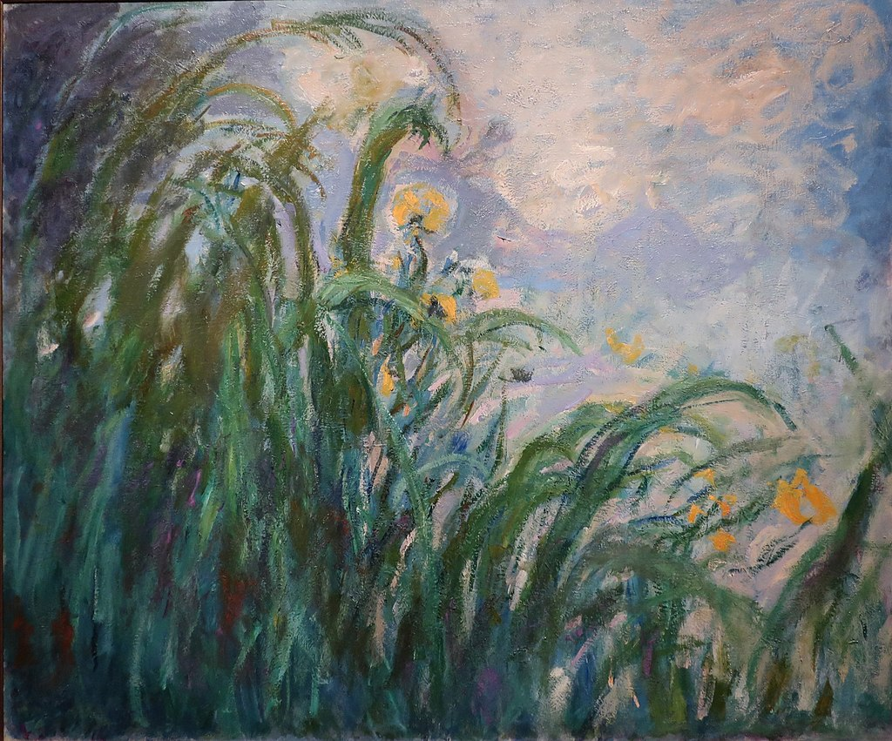

<head>
<meta charset="UTF-8" />
<meta name="keywords" content="drawing, painting" />
<meta name="description" content="drawings by Sunjy" />
<title>Sunjy</title>
<link rel="shortcut icon" type="image/x-icon" href="../../mImages/mCommon/favicon.ico" media="screen" />
<link rel="stylesheet" type="text/css" href="../../mCsses/mCommon/mCssA.css" />
<link rel="stylesheet" type="text/css" href="../../mCsses/mCommon/mCssB.css" />
<link rel="stylesheet" type="text/css" href="../../mCsses/mCommon/mCssC.css" />
<link rel="stylesheet" type="text/css" href="../../mCsses/mCommon/mCssD.css" />
<link rel="stylesheet" type="text/css" href="../../mCsses/mContent/mCssA.css" />
<link rel="stylesheet" type="text/css" href="../../mCsses/mContent/mCssB.css" />
<link rel="stylesheet" type="text/css" href="../../mCsses/mContent/mCssC.css" />
<link rel="stylesheet" type="text/css" href="../../mCsses/mContent/mCssD.css" />
</head>
<script type="text/javascript" src="../../mScripts/mContent/mContentAA.js" /></script>
<script type="text/javascript" src="../../mScripts/mContent/mContentAB.js" /></script>
<script type="text/javascript" src="../../mScripts/mContent/mContentAC.js" /></script>
<script type="text/javascript" src="../../mScripts/mContent/mContentAD.js" /></script>
<script type="text/javascript"></script> 
<script type="text/javascript">
document.write('<div class="mImgAbsolute"></div>');
/*
document.write('<p class="mFontSizeBColor" />From a white paper...</p>');
document.write('<table class="center"><tr><td>');
document.write('');
document.write('</td></tr></table>');
*/
</script>


<script type="text/javascript">
document.write('<p class="mFontSizeBColor" />Yellow Irises </p>');
document.write('<p class="mFontSizeSColor" />Yellow Irises by Claude Monet. Musée Marmottan Monet selection of paintings depicting different aspects of Giverny Gardens by Claude Monet include:<br>•Yellow Irises<br>•Day Lilies<br>•Roses<br>•Weeping Willow<br><br>Monet first rented a house and gardens in Giverny in 1883. The house was situated near the main road between the towns of Vernon and Gasny.<br><br>As Monet’s fortunes improved with his increasing success, his painting sales, Monet was able to buy the house, the surrounding buildings, and the land for his gardens in 1890.<br><br>Monet’s family help to develop the gardens, and Monet built a greenhouse and a second studio. As Monet’s art sales grew, his garden grew and evolved.<br><br>In 1893 Monet purchased additional land with a water meadow and began a large landscaping project, which included lily ponds. Claude Monet was the garden architect and eventually hired seven gardeners to help him.<br><br>White water lilies local to France were planted along with imported cultivars from South America and Egypt, resulting in a range of colors including yellow, blue, and white lilies that turned pink with age.<br><br>Yellow Irises by Claude Monet is the result of his years of garden design driven by his fascination for color and light.<br></p>');
document.write('<table class="center" /><tr><td>');
document.write('•Yellow Irises<br>•Day Lilies<br>•Roses<br>•Weeping Willow<br><br>Monet first rented a house and gardens in Giverny in 1883. The house was situated near the main road between the towns of Vernon and Gasny.<br><br>As Monet’s fortunes improved with his increasing success, his painting sales, Monet was able to buy the house, the surrounding buildings, and the land for his gardens in 1890.<br><br>Monet’s family help to develop the gardens, and Monet built a greenhouse and a second studio. As Monet’s art sales grew, his garden grew and evolved.<br><br>In 1893 Monet purchased additional land with a water meadow and began a large landscaping project, which included lily ponds. Claude Monet was the garden architect and eventually hired seven gardeners to help him.<br><br>White water lilies local to France were planted along with imported cultivars from South America and Egypt, resulting in a range of colors including yellow, blue, and white lilies that turned pink with age.<br><br>Yellow Irises by Claude Monet is the result of his years of garden design driven by his fascination for color and light.<br>" />');
document.write('</td></tr></table>');
</script>


